Control Engineering 1 · Week 13 · P와 PI의 Steady-State Error 비교하기
본인 사본에서 코드와 작성란을 직접 수정하세요. 이름: ⟦직접 입력⟧ / 학번: ⟦직접 입력⟧
실행 방법
Live Editor에서 코드 안을 클릭하고 Run Section으로 현재 Section을 실행하세요(Windows/Linux Ctrl+Enter, Mac ⌘+Enter). Run은 문서 전체를 실행합니다. 설명·작성란은 직접 편집하세요.
처음에는 위에서부터 실행하고, 값을 바꾼 Section은 다시 실행하세요. 변수가 없다는 오류가 나면 앞 Section부터 실행하세요. 출력은 코드 아래 또는 오른쪽에 표시됩니다.
환경: MATLAB Online과 Control System Toolbox.
1. Steady-State Error 계산
아래 계산을 먼저 수행한 뒤 MATLAB 결과와 비교하세요.
- 실습용 Live Script의 ‘3. P와 PI의 Step 추종’ 코드에서
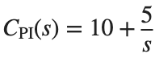
와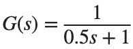
를 사용하세요. - 실행 전에
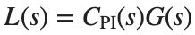
와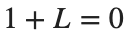
에서 얻는 특성다항식을 손으로 쓰세요. - 2차 다항식의 세 계수가 양수이면 두 Pole의 실수부가 음수라는 기준으로 안정성을 확인하세요.
여기서  는 Position Error Constant입니다. 뒤의 Controller 식에서 로 표시한 비례 Gain과 구분해 계산하세요.
는 Position Error Constant입니다. 뒤의 Controller 식에서 로 표시한 비례 Gain과 구분해 계산하세요.
는 Position Error Constant입니다. 뒤의 Controller 식에서 로 표시한 비례 Gain과 구분해 계산하세요.- L의 원점 Pole 수로 System Type을 정하고
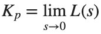
,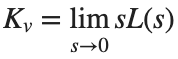
를 구하세요. - 안정성을 확인한 뒤 Unit Step 오차
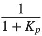
와 Unit Ramp 오차 를 계산하고 실행 결과와 비교하세요. - 이 계산을
 =5의 기준 기록으로 사용합니다.
=5의 기준 기록으로 사용합니다.
코드 실행 전 — 손으로 계산한 식과 값: ⟦여기에 계산을 적으세요⟧
코드 실행 후 — 비교할 MATLAB 출력값: ⟦출력값을 적으세요⟧
2. Pole 위치 비교
두 모델은 Damping Ratio도 달라진다는 점을 확인합니다.
실행 전 예상: ⟦직접 입력⟧
T1=tf(10,[1 2 10]);T2=tf(100,[1 10 100]);
disp(pole(T1));disp(pole(T2));
figure;step(T1,T2,0:.005:10);legend('T1','T2');grid on;
직접 수행:
실습용 Live Script의 ‘2. Pole 위치 비교’ 코드의 모델은 T1=tf(10,[1 2 10]), T2=tf(100,[1 10 100])입니다.
- 각 분모를
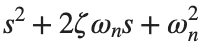
에 대응시켜 를 구하고 두 행으로 기록하세요. - T1의 ζ를 유지하고
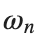
만 T2의 값으로 바꾼 모델을 만드세요. 분자는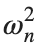
로 두어 DC Gain을 유지합니다. - 같은 시간축에서 T1과 새 모델의 Step Response를 겹쳐 그리고 stepinfo의 Rise Time·Settling Time·Overshoot를 표로 적으세요. 원래 T1·T2 비교와 달리 이번에 고정한 계수가 무엇인지 적으세요.
% ✍ 직접 작성: 아래에 본인 코드를 추가하세요.
바꾼 조건: ⟦직접 입력⟧
실제 결과: ⟦직접 입력⟧
예상과 차이 및 원인: ⟦직접 입력⟧
3. P와 PI의 Step 추종
충분히 긴 시간으로 느린 Mode를 포함합니다.
실행 전 예상: ⟦직접 입력⟧
s=tf('s');G=1/(.5*s+1);P=10;PI=10+5/s;
Tp=feedback(P*G,1);Tpi=feedback(PI*G,1);t=0:.01:30;
figure;step(Tp,Tpi,t);legend('P','PI');grid on;
disp([1-dcgain(Tp),1-dcgain(Tpi)]);
직접 수행:
- 기준 Plant G=1/(0.5*s+1)는 유지하고 P Gain 의 Closed-loop를 만드세요. 이론적인 Unit Step 오차 와 1-dcgain(Tp)를 나란히 기록하세요.
- PI의 은 유지하고 을 각각 적용하세요. 같은 시간축에 Unit Step 곡선 세 개를 그리고 범례에 를 적으세요.
 별로 1-dcgain(Tpi), stepinfo(Tpi)의 Settling Time·Overshoot를 기록하세요. 최종 오차와 Transient Response 지표를 나누어 대조합니다.
별로 1-dcgain(Tpi), stepinfo(Tpi)의 Settling Time·Overshoot를 기록하세요. 최종 오차와 Transient Response 지표를 나누어 대조합니다.
% ✍ 직접 작성: 아래에 본인 코드를 추가하세요.
바꾼 조건: ⟦직접 입력⟧
실제 결과: ⟦직접 입력⟧
예상과 차이 및 원인: ⟦직접 입력⟧
4. Ramp 추종
시간 끝값과 극한값을 분리합니다.
실행 전 예상: ⟦직접 입력⟧
s=tf('s');G=1/(.5*s+1);Tp=feedback(10*G,1);Tpi=feedback((10+5/s)*G,1);
t=(0:.01:30)';r=t;yp=lsim(Tp,r,t);yi=lsim(Tpi,r,t);
figure;plot(t,r-yp,t,r-yi);legend('P error','PI error');xlabel('Time (s)');ylabel('Tracking error');grid on;
disp([r(end)-yi(end),1/5]);
직접 수행:
- 실습용 Live Script의 ‘4. Ramp 추종’ 코드의 Loop
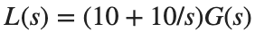
를 만들고, 분모의 원점 Pole 수로 System Type을 정하세요. 는 앞 활동과 같습니다.  를 구하고 Unit Ramp 오차
를 구하고 Unit Ramp 오차  를 계산하세요.
를 계산하세요.- 같은 시간축과 Ramp 입력을 유지하고, 이 활동에 주어진 적분 Gain 10을 사용하도록 코드의 적분 Gain 5를 바꾸어 PI 모델을 다시 만드세요. 이어서 lsim으로 출력 y를 구하세요. 마지막 표본의
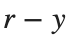
와 계산한 를 나란히 적고 두 값의 절대 차이를 기록하세요.
% ✍ 직접 작성: 아래에 본인 코드를 추가하세요.
바꾼 조건: ⟦직접 입력⟧
실제 결과: ⟦직접 입력⟧
예상과 차이 및 원인: ⟦직접 입력⟧
반복 숙달과 제출 전 확인
앞의 직접 수행에서 비교한 조건 세 가지를 아래에 정리하세요. 이미 수행한 실험을 추가로 반복할 필요는 없습니다. 예상은 정확한 수치 대신 증가·감소 방향으로 적어도 됩니다.
반복 1 — 조건: ⟦직접 입력⟧ / 예상: ⟦직접 입력⟧ / 실제: ⟦직접 입력⟧
반복 2 — 조건: ⟦직접 입력⟧ / 예상: ⟦직접 입력⟧ / 실제: ⟦직접 입력⟧
반복 3 — 조건: ⟦직접 입력⟧ / 예상: ⟦직접 입력⟧ / 실제: ⟦직접 입력⟧
선택:
예: PI Controller에서 적분 항을 상수로 쓴 경우
- 실습용 Live Script의 ‘3. P와 PI의 Step 추종’ 코드 복사본에서 PI=10+5/s를 PI=10+5로 바꾸고, feedback(PI*G,1)를 다시 만드세요.
- 변경 전후의 1-dcgain(Tpi)를 기록하고, 원점 Pole이 있는지 대조하세요. Controller 정의 줄만 10+5/s로 바꾸세요.
코드, 실제 Output·그래프, 직접 작성한 해석을 포함하세요. 제출은 KLAS를 이용하며 기한은 학기 일정과 최신 공지를 확인합니다.
파일명: 이름_학번_13주차.mlx.